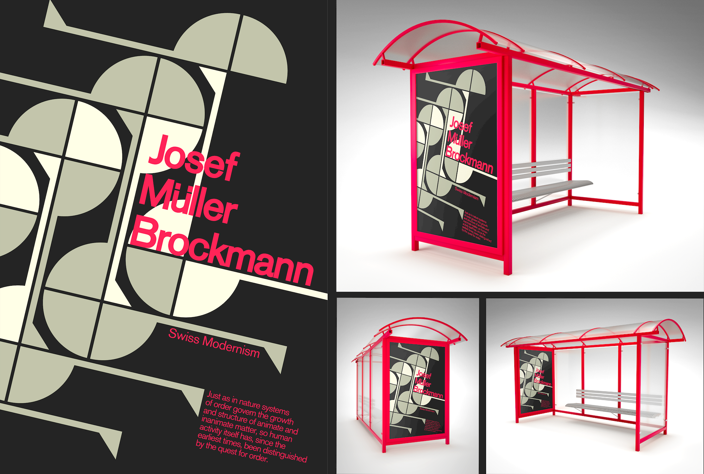
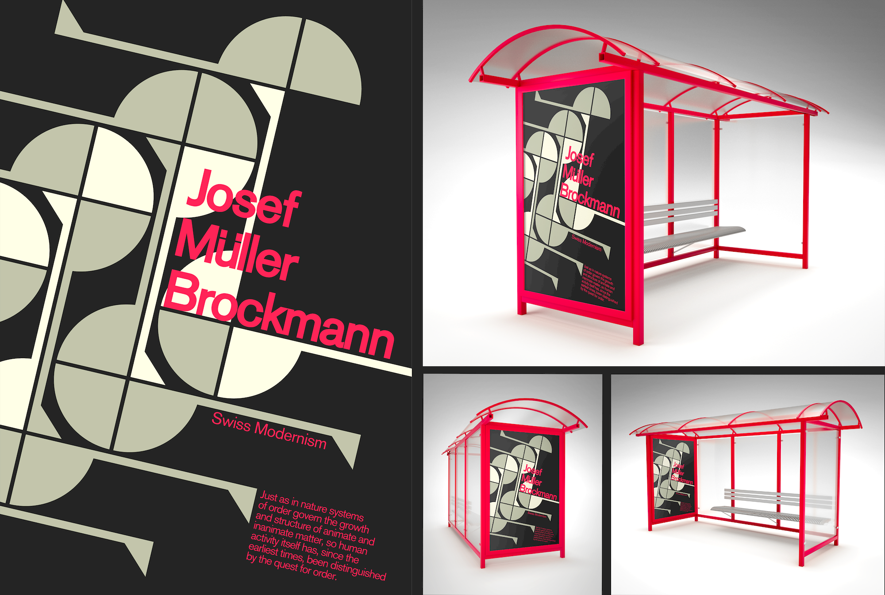
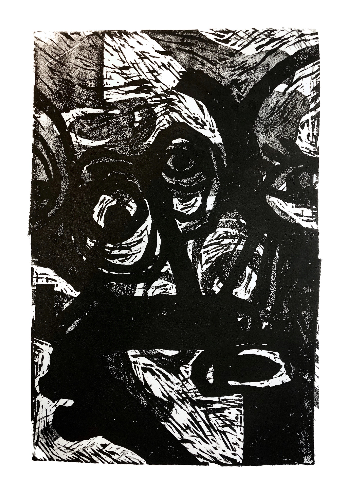
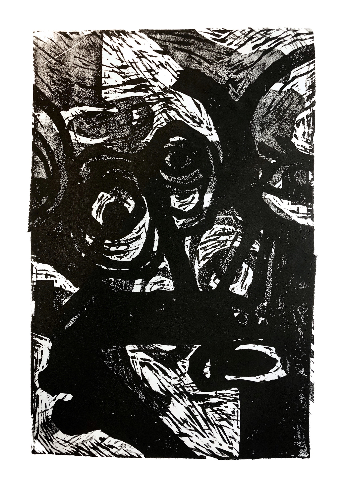
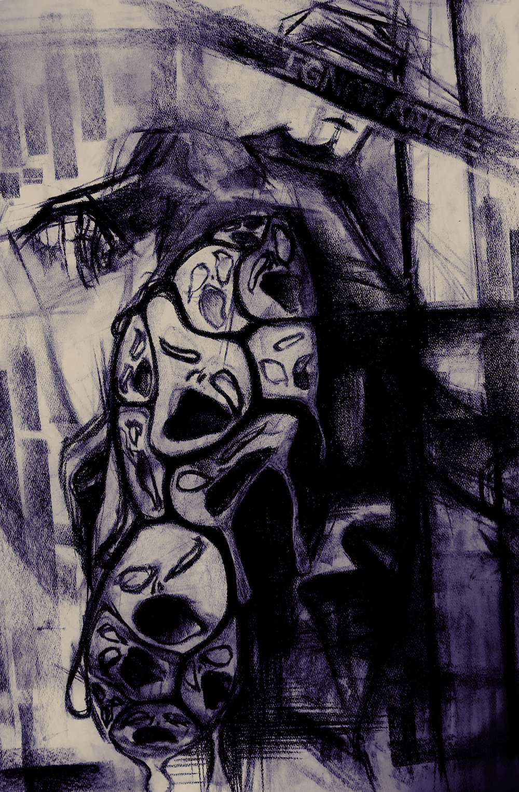
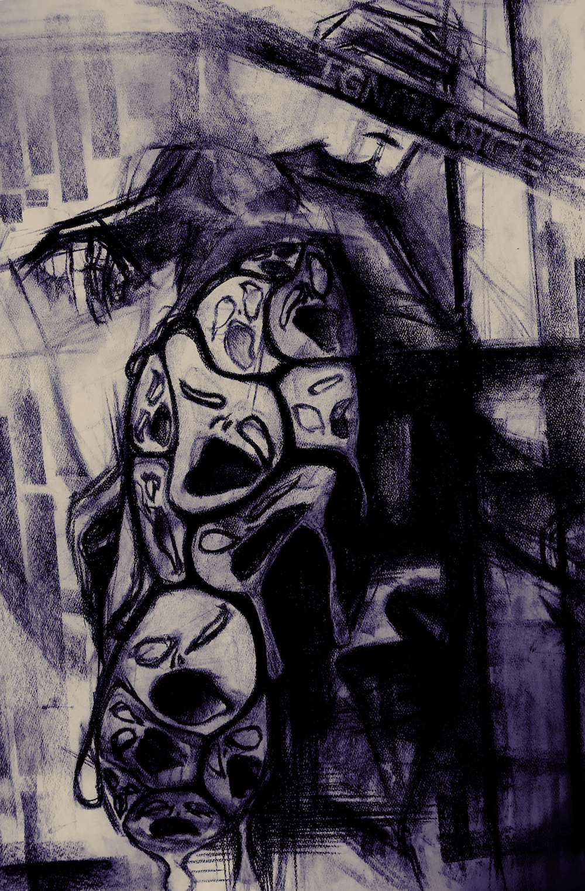

there is always someone there. always.
foam print, Zoom, Photoshop.">

 Josef Müller-Brockmann
Josef Müller-Brockmannassimilation of Josef Müller-Brockmann
Photoshop">
 Inner Turmoil
Inner Turmoilyou absolute monkey!
wood print">


 Hustle Culture
Hustle Culture